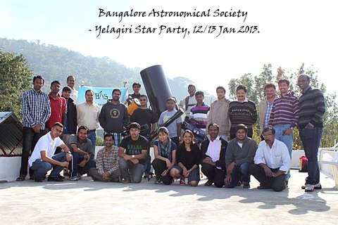

The Bangalore Astronomical Society
Welcome to the Bangalore Astronomical Society. Bangalore Astronomical Society is a registered charitable trust aimed at promoting Astronomy as a science and a hobby. The activities that we conduct include,
- Night Sky Observation Sessions (fondly known as star parties)
- Astronomy Workshops for Schools, colleges and amateur astronomers
- Astronomy outreach for general public and schools/colleges In addition, BAS members contribute to News paper articles, TV discussions to promote astronomical events and scientific thinking.

Join the discussion!
We do not have formal memberships. Our primary channel of communication is our Telegram group. All are welcome to join! We are also active on other Social media platforms like Instagram and X.
To join our Telegram group, fill out this Google Form which will give you the joining link of the group. We apologize for this extra step, which is our deterrent to prevent spam.
The Telegram group is very active! You do not have to be in Bangalore, or even in India to join. Feel free to post your questions about the universe, astronomy, telescopes, star-gazing, observing, astrophotography etc. on the group.
Watch out for event announcements pinned on the Telegram group and posted to our other social media platforms as well.
Posts and articles
Posts and articles written by BAS members:
- 26 Feb 2024 » Challakere Event
- 25 Feb 2024 » Nsd Iia Event
- 19 Feb 2024 » Amrita Event
- 27 Nov 2015 » Do It Yourself Dew Heater
- 27 Nov 2015 » Buying A Telescope
- 12 Nov 2015 » Beginning With Binoculars
Past Events
BAS conducted a practical amateur astronomy workshop in Coorg during 8th to 12th February 2024,with great success! We had 18 telescopes on the field. The 8th,9th,12th were dedicated to advanced amateurs and 10th,11th reserved as public nights. The response on the public nights were very good and appreciated. The event saw around 15 telescopes fielded by BAS members under the pristine skies of Talacauvery,Coorg. BAS also conducted a session on astrophotography at Amrita Institute of Technology,Kasavanahalli,Bengaluru. Here is a link to the post regarding the event.Amrita AstroImaging Event
BAS conducted an outreach program for school children at Sri Venketeshwara Rural High School on 24th February,2024 evening at Challakere,Karnataka. Pictures and a general description will be updated soon. Challakere event page
BAS participated at IIA’s koramangala branch for National Science Day on Sunday,25th February,2024. An update with pictures from the event will be updated here soon.
Upcoming Events
BAS will be conducting it’s annual March Star Party in the first to second week of March. More information will be updated here..
Volunteering
If you wish to volunteer in our activities, please join the Telegram group and contact one of the admins.
Contact Us
If you need to contact the BAS executive council for any reason, you may e-mail us at the same e-mail address info !AT! bas !DOT! org !DOT! in